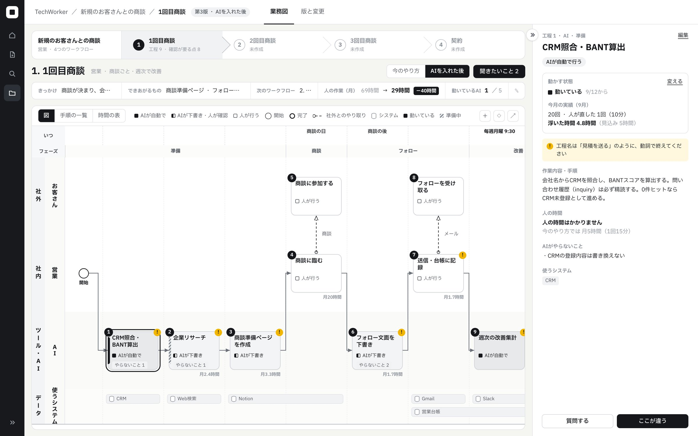
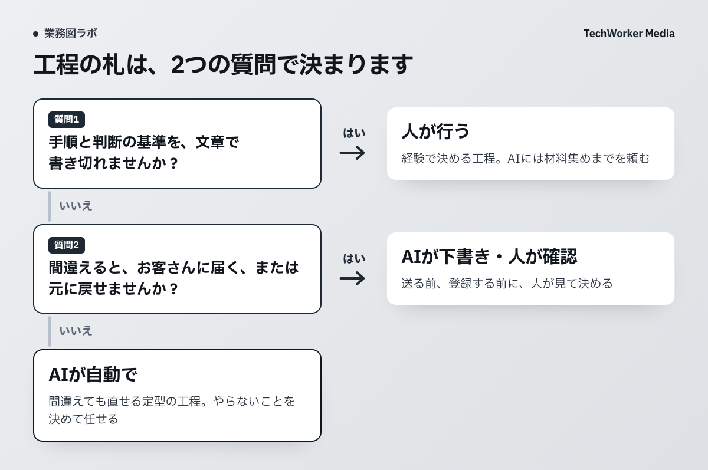

公開中の商談業務図から、担当の区切りを読む
次は、TechWorkerのCompanyMap AI公開ページに掲載している営業「1回目商談」の画面です。AIの仕事を、営業やお客さんの工程と同じ図に並べています。

まず、工程6と7を見てください。AIがフォロー文面を下書きし、営業が送信して台帳へ記録します。「フォローする」という1つの仕事を、担当が変わるところで区切っています。
準備の工程1には「CRM照合・BANT算出」とあります。CRMは顧客情報の管理システム、BANTは予算・決裁者・必要性・導入時期を確かめる枠組みです。この工程には、CRMの登録内容を書き換えないという制約も置いています。
この公開図から示せるのは、担当・使用システム・任せない操作を併記する設計です。毎週の集計が現在どの時刻に動いているか、どれだけ時間が減ったかは、この図だけでは確認できません。
AIに任せる範囲を、3つの札で分ける
業務全体を丸ごと自動にするか決める前に、工程ごとに担当の札を付けます。TechWorkerでは、次の3つに分けて考えます。
| 札 | 任せる範囲 | 商談図の例 |
|---|---|---|
| AIが自動で | 決めた対象・手順で実行し、人が結果を点検する | 既存のCRM情報との照合 |
| AIが下書き・人が確認 | 案や候補を作る。確定や実行は人へ渡す | 企業リサーチ、フォロー文面 |
| 人が行う | 判断と実行を人が担う | 商談、顧客への送信 |
札は製品の権限設定ではありません。「AIが自動で」と書いても、あらゆる資料や操作を許可する意味にはなりません。対象資料、出力先、使えるツールを工程ごとに指定します。
札を付ける前に、2つの問いに答える
最初に、手順と判断基準を文章にできるかを確かめます。担当者ごとに答えが違う工程は、その違いを整理するところから始めます。

次に、間違えたとき誰に影響するか、元へ戻せるかを見ます。社内向け集計は修正できても、顧客に送った約束は取り消しにくい場合があります。後者には、人が確認してから実行する工程を置きます。
この2問に答えられても、すぐ自動化はしません。入力が欠けた場合や例外のある案件で試し、想定した範囲で止まるかを確かめます。判断基準を書けることと、AIが必ず守ることは別です。
「やらないこと」と受け取る人を、工程の隣へ書く
商談図の「CRMの登録内容は書き換えない」は、照合と変更を分けるための一文です。同じように、下書き工程には「送信しない」、調査工程には「未確認の金額を補わない」と書けます。
下書きを受け取る人も決めます。営業フォローなら、営業が議事録との一致、宛先、金額、納期を確認します。「人が確認」という札だけでは、誰が何を見るかまでは伝わりません。
止まる条件は「分からなければ相談」より具体的にします。たとえば、2つの資料で納期が違う、宛先を1人に絞れない、必要な資料が読めない、と書きます。該当したら、未確認事項と作業済みの範囲を確認者へ返す設計にします。
1つの業務で試し、図を書き直す
まず1部署の1業務を選び、実際の担当者と工程を書き出します。迷う工程は人に残し、AIには下書きや候補の抽出から任せます。
- 各工程に、担当・入力・出力・使うシステムを書きます。
- 3つの札と、AIがやらない操作を記します。
- 確認者・確認項目・止める条件を決めて1件試します。
- 修正にかかった時間や、止まれなかった箇所をもとに図を直します。
「AIが処理した件数」だけでは、任せてよかったかは分かりません。人が確認し直した時間、誤って確定しそうになった項目、引き継ぎが止まった場所を見ます。札を軽くする判断は、この記録を確かめてから行います。
部署別 業務図テンプレート集には空の型もあります。担当者への聞き取りから図を作る場合は、CompanyMap AIの掲載例をご覧ください。
元の資料と確認範囲
- TechWorker「CompanyMap AI」。営業「1回目商談」の公開掲載画面。
- TechWorker「部署別 業務図テンプレート集」。担当別の図と空の型。
公開用資料の確認：2026年10月6日。本文の判断手順はTechWorkerの設計ノウハウです。画面に表示された業務の稼働状況や、時間削減の実績を検証した記事ではありません。